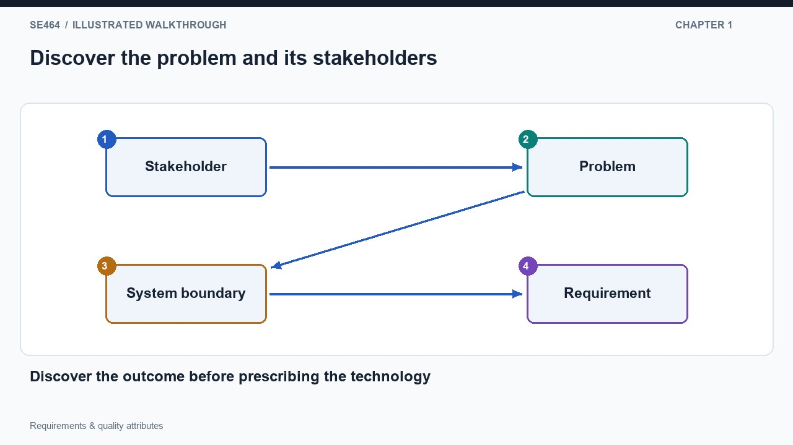
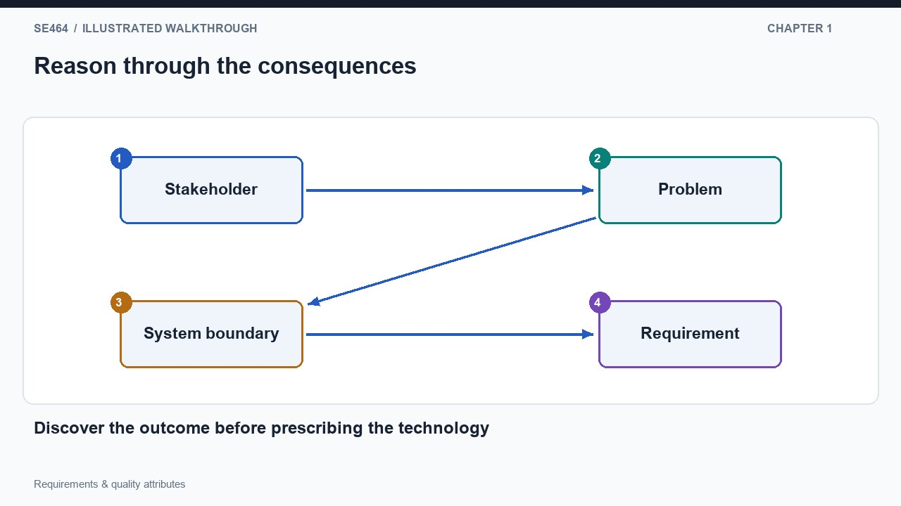
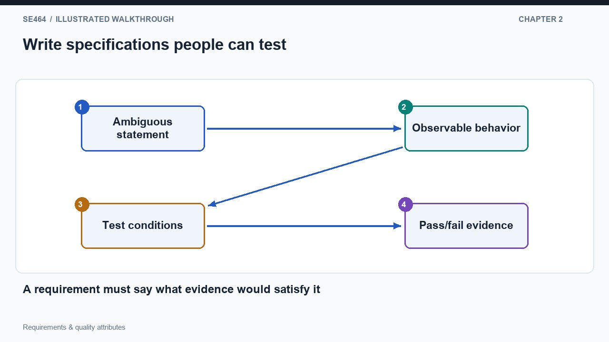
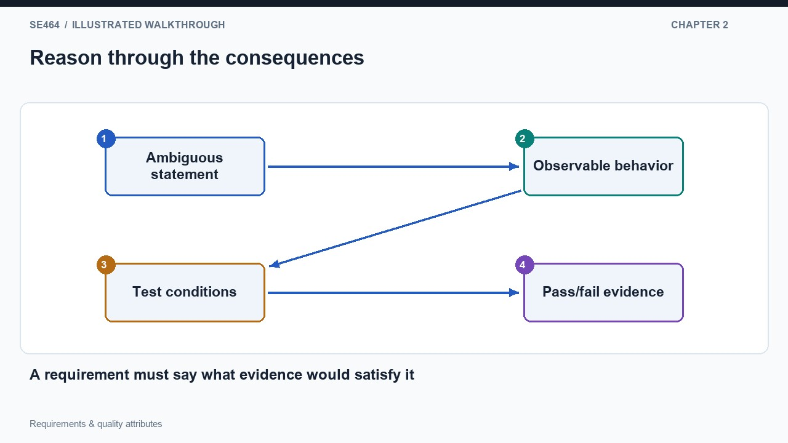
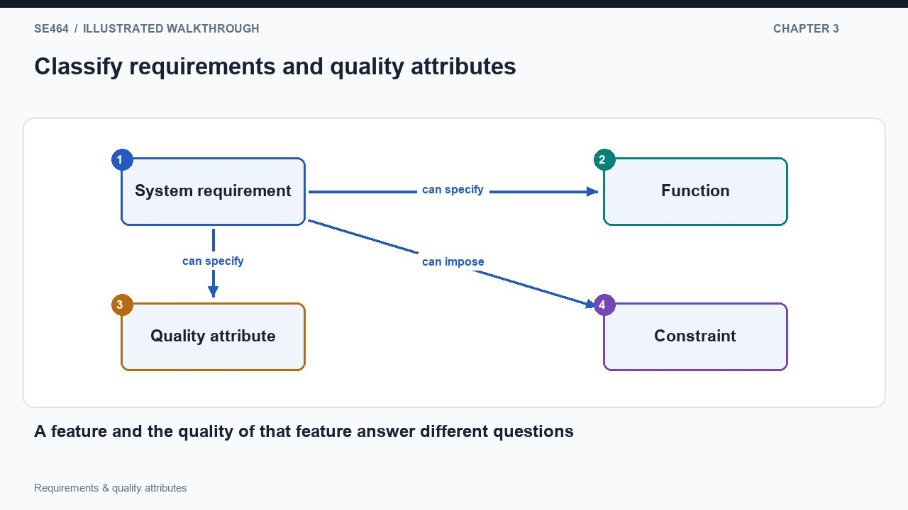
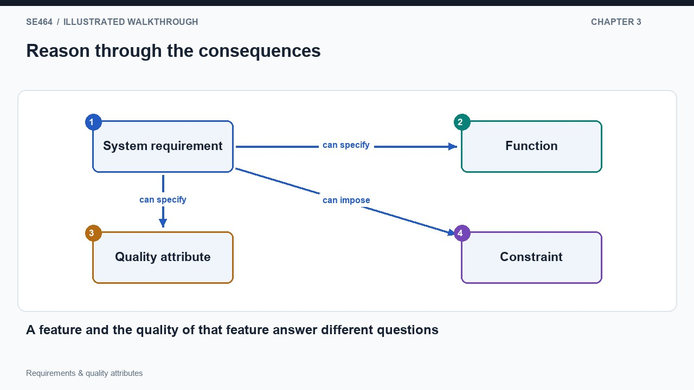
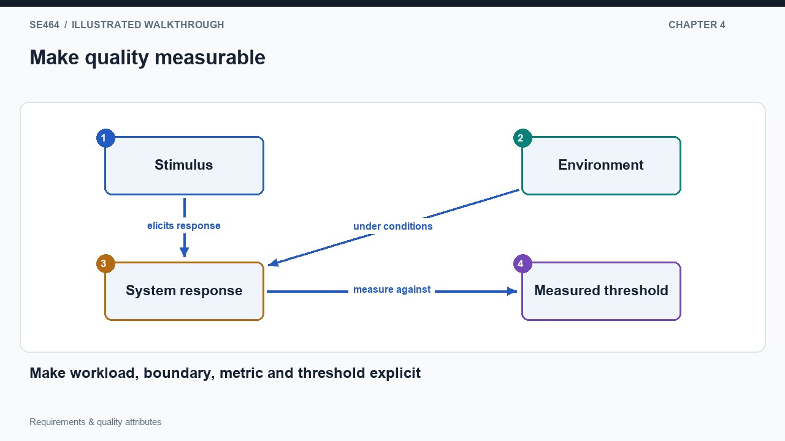
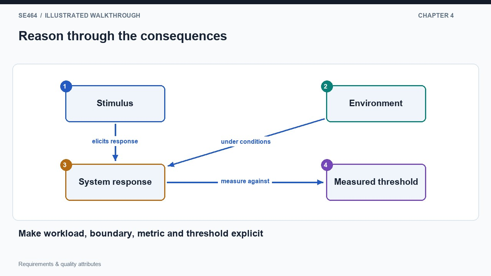
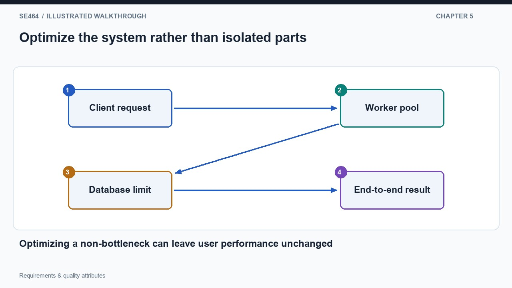
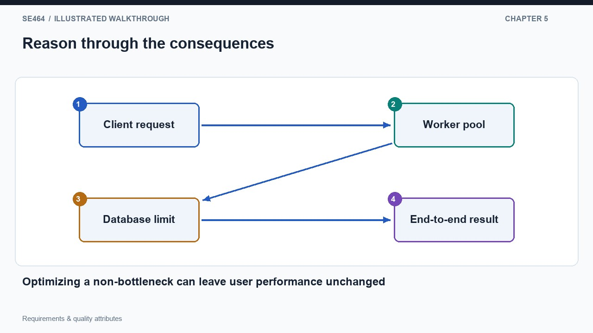

Translate stakeholder concerns into clear requirements and measurable quality scenarios that guide design.
Requirements begin with stakeholders who have needs, constraints and competing priorities. Elicitation gathers these concerns; analysis examines consistency, feasibility and completeness; specification records an agreed account; validation checks that the account addresses the actual problem. A request to use a particular technology may reflect a real operational constraint, or it may be a proposed solution that hides the underlying need.
Ask why a statement matters and who is affected if it is unmet. Distinguish a business goal from an observable system behavior and from a contractual or organizational constraint. A system boundary helps expose missing actors and dependencies. Conflicts should become explicit tradeoffs rather than being concealed in vague wording. Architecture then starts from a clearer problem, avoiding detailed optimization of a solution that stakeholders never needed.


No. It is a technology constraint or proposed solution; discover its rationale and whether it is actually mandatory.
A specification bridges stakeholder needs and implementation. It may describe functions, data, interfaces, quality constraints, operating environments and delivery obligations. Good requirements are understandable, consistent, verifiable and traceable to goals. Completeness does not mean unlimited detail; it means including what is necessary for the intended agreement and identifying unresolved questions instead of hiding them.
Ambiguity becomes visible when different readers can produce different valid interpretations. Soup or salad and bread has more than one grouping; a name that “can be 127 characters” leaves optionality and length boundaries unclear. Rewrite statements so a tester can distinguish compliance from noncompliance. Preserve links to rationale and design choices, because changing a requirement after deployment may affect architecture, tests, training and operational procedures as well as code.


Yes. Missing boundaries, definitions and acceptance criteria allow incompatible interpretations; testable examples help expose them.
Functional requirements describe what the system does, while quality requirements constrain how well relevant behavior occurs under stated conditions. Delivery or technology constraints form additional categories. These categories do not determine priority: a quality requirement can be essential, and a proposed function can be optional. “Secure login” needs decomposition into authentication behavior and explicit security properties rather than a stronger adjective.
Quality attributes often span multiple responsibilities. Reliability can depend on persistence, retries, status reporting and recovery; performance can depend on database work, communication and workload. They therefore influence architecture, even though the system can continue evolving after an initial design. Express these concerns in scenarios and acceptance checks. Asking how an attribute is observed makes it easier to compare designs and prevents quality from becoming a list of aspirations.


No. Mandatory status depends on the agreement and system context, not whether the requirement describes a function or a quality attribute.
A measurable requirement names the observation and the conditions under which it must hold. The search example gives a proportion and a latency threshold, but still needs a workload, dataset and measurement window. Counting registered users does not specify concurrency or request intensity. Define how failures, timeouts and warm-up periods enter a measurement so that different tests answer the same question.
Other qualities require equal care. Accuracy needs a defined error measure; maintainability needs a relevant change task or evidence rather than a vague hope. XML, Java or a SQL database may be design constraints, but they do not by themselves establish interoperability. Distinguish the objective from a proposed mechanism and choose a test that addresses the objective. Any additional numerical targets in a teaching exercise should be marked as assumptions.


No. Registration, activity, concurrency and request rate measure different things and require separate workload assumptions.
The C1, C2 and T1 example models producers feeding a consumer on one CPU. Under the stated teaching assumptions, each stage operation has equal cost and completed throughput is limited by the smaller of combined production and consumption. A CPU budget of twelve stage operations per second must cover both producing and consuming work, so maximizing each component independently is not a valid objective.
With producer rates three and three and a consumer rate six, completed throughput is six while the total CPU budget is twelve. Giving all three components four operations per second consumes the same budget but only completes four because consumption is slower than production. This is a deliberately simplified capacity model. Real systems add scheduling, unequal costs and queueing; one hundred percent utilization leaves no headroom and should not be described as unlimited capacity.


Both consume twelve stage operations per second, but throughput is min(C1+C2,T1): six in the first case and four in the second.
For example: under a specified workload and dataset, at least 95% of search requests complete within 2 seconds over a stated measurement window; define how errors count. Numbers are a proposed teaching example, not a source requirement.
It does not say whether these are registered, daily active or concurrent users, what requests they issue, or what latency/error objectives must hold.
Throughput=min(3+3,6)=6 completed requests/s; CPU consumption=3+3+6=12 stage operations/s, or 100% of the stated budget. This depends on equal per-operation cost and the stated flow.
Rewrite “the registration system must be fast and reliable” as two testable quality scenarios. Include a burst of traffic and a lost response after saving. Explain which architectural decisions each scenario influences.
Specify workload, environment, stimulus, expected response, measurement window, and threshold. For example, define a response-time percentile under a stated arrival rate, and require retry with the same ID to recover a durable saved result after response loss. Numbers must come from stakeholder needs, not this example. These requirements influence capacity, admission control, persistence, and idempotency.
Questions-only worksheet · Worked answer sheet
A transit display must show a changed platform within five seconds for at least 99% of updates during a two-hour rush-hour test. The team reports an average update delay of 700 ms and no process crashes. Which additional evidence is essential to decide whether this requirement passed? Assume timestamps can be correlated from the accepted platform change to its appearance on the display.
Best answer: B.
The team needs the number of eligible updates displayed within five seconds divided by all eligible updates during the specified workload. Missing or never-displayed updates must not disappear from the denominator. A low mean can coexist with enough slow updates to fail a 99% objective, and process uptime does not demonstrate propagation. Check timestamp correlation and workload representativeness as part of the evidence. Report both the measured fraction and excluded or invalid observations with a justified measurement policy.
An acceptance test must measure the property actually promised, at the correct boundary and with failures counted.
A remote-assistance portal has a 99% successful-session target for a test window. There are 9,600 sessions that connect successfully, 250 that fail authentication because the identity service is unavailable, and 150 that time out before connecting. The dashboard excludes dependency errors and reports 9,600/9,750. Calculate the user-observed success rate and decide whether the target passed. State one scope clarification needed before the next test.
With all 10,000 attempted eligible sessions in scope, the user-observed success rate is 9,600/10,000=96%, below the 99% target. The dashboard’s denominator of 9,750 excludes 250 failures and produces about 98.46%, which also fails but misrepresents the promised experience. Define which attempts are eligible, where the observation begins and ends, and whether expected user mistakes are distinct from service errors. Identity-service unavailability should count when the promise is successful end-to-end connection, even though another component caused it.
Quality accounting must follow the stakeholder-visible service boundary rather than organizational ownership of failing components.
A mobile field-inspection app must remain usable during a six-hour network outage, but central administrators want every revoked account blocked everywhere within thirty seconds. Inspectors may be offline with previously issued credentials. Explain why these requirements conflict under that condition, propose two defensible product policies, and write one acceptance test for the policy you recommend. Treat the choice as a stakeholder decision rather than a technical trick.
An offline device cannot reliably learn a new central revocation within thirty seconds. One policy prioritizes offline work using bounded cached credentials, explicitly delaying revocation until reconnection or expiry and limiting allowed operations. Another requires recent online authorization, sacrificing extended offline use. For inspection capture, a defensible compromise may permit locally encrypted drafts but require online authorization before submission or sensitive retrieval. Test a revocation during a simulated six-hour disconnection: verify only permitted draft operations remain available and that synchronization is denied until authorization is re-established.
The exercise turns conflicting stakeholder goals into explicit behavior and acceptance evidence instead of silently weakening one promise.